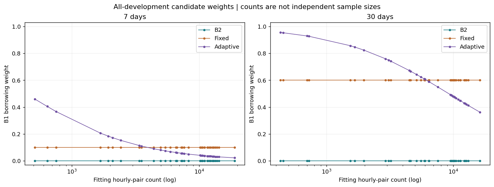
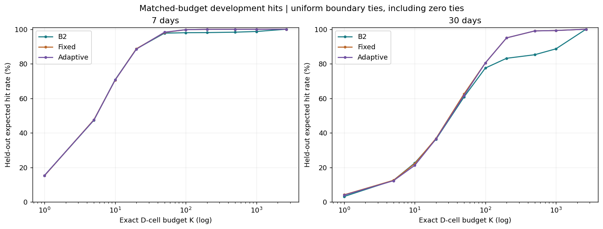
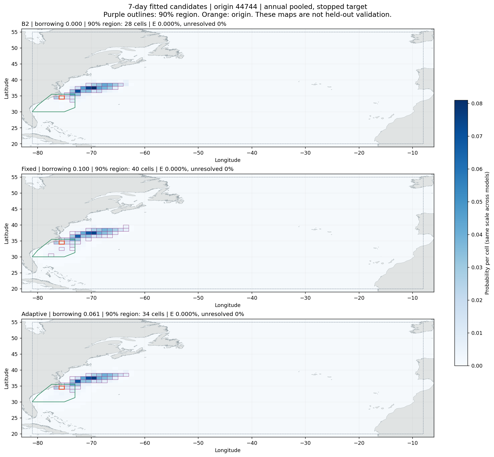
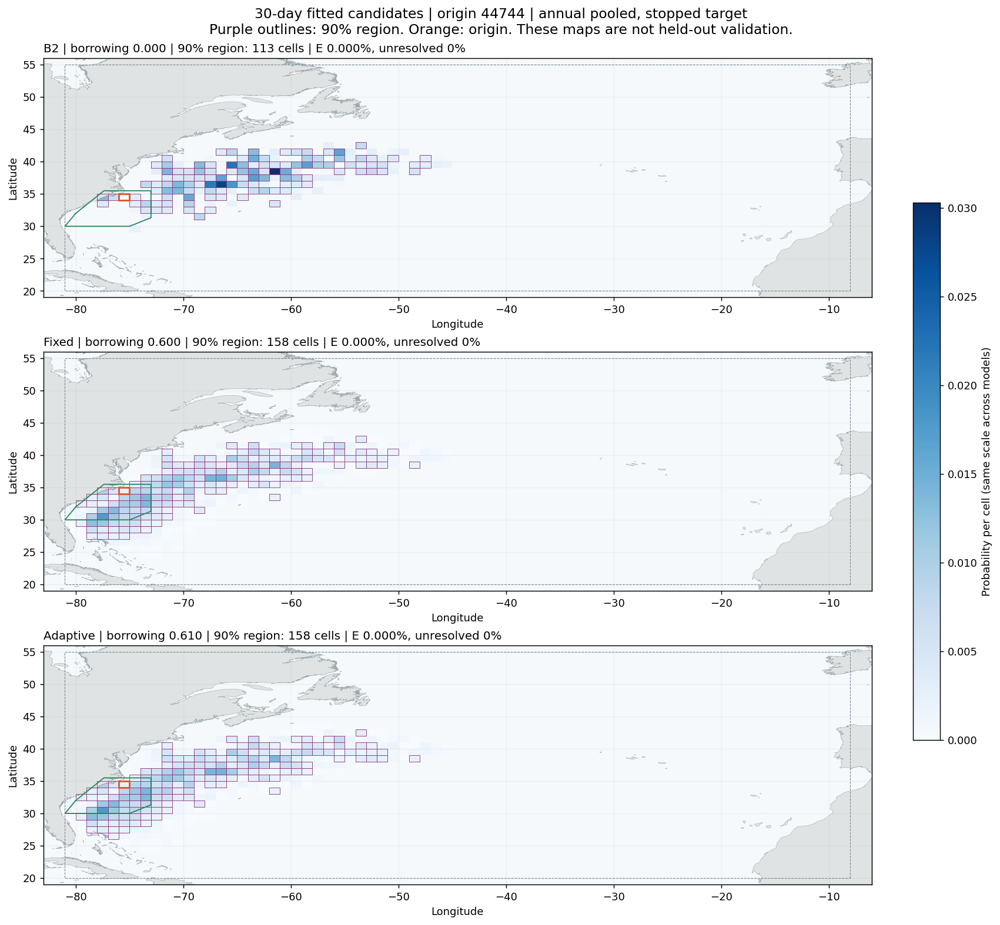

adaptive_b2_b1_20261030T044950_931787Z · Development results · Scientific review pending
| horizon_days | model | eligible_pairs | eligible_ids | brier | region90_cells | unsupported_pairs | region90_hit_pct | Brier_95_interval |
|---|---|---|---|---|---|---|---|---|
| 7 | Adaptive | 303288 | 385 | 0.928765 | 20.942530 | 0 | 89.793859 | [0.921493, 0.936074] |
| 7 | B2 | 303288 | 385 | 0.929001 | 18.225812 | 0 | 87.439002 | [0.920938, 0.936779] |
| 7 | Fixed | 303288 | 385 | 0.928607 | 25.643751 | 0 | 93.291195 | [0.921578, 0.935612] |
| 30 | Adaptive | 268998 | 337 | 0.988806 | 122.186247 | 0 | 85.842646 | [0.987446, 0.990580] |
| 30 | B2 | 268998 | 337 | 0.994751 | 62.608321 | 0 | 66.372612 | [0.992129, 0.997997] |
| 30 | Fixed | 268998 | 337 | 0.988819 | 126.406014 | 0 | 86.428524 | [0.987545, 0.990426] |
Region-hit percentage and cell count must be read together. Lower Brier is better.
7 days: the prespecified joint point-estimate screen is not met. Adaptive minus Fixed: Brier +0.000157; region cells -4.701; actual hits -3.497 percentage points. Read paired intervals before interpreting strength of evidence.
30 days: the prespecified joint point-estimate screen is not met. Adaptive minus Fixed: Brier -0.000013; region cells -4.220; actual hits -0.586 percentage points. Read paired intervals before interpreting strength of evidence.
| horizon_days | comparison | metric | difference | lower_95 | upper_95 | defined_replicates | undefined_replicates |
|---|---|---|---|---|---|---|---|
| 7 | Adaptive - Fixed | brier | 0.000157 | -0.000395 | 0.000967 | 200 | 0 |
| 7 | Adaptive - Fixed | region90_cells | -4.701221 | -5.049408 | -4.394022 | 200 | 0 |
| 7 | Adaptive - Fixed | region90_hit | -0.034973 | -0.040863 | -0.029940 | 200 | 0 |
| 7 | Adaptive - B2 | brier | -0.000236 | -0.001217 | 0.001048 | 200 | 0 |
| 7 | Adaptive - B2 | region90_cells | 2.716718 | 2.374501 | 3.165530 | 200 | 0 |
| 7 | Adaptive - B2 | region90_hit | 0.023549 | 0.020398 | 0.027155 | 200 | 0 |
| 30 | Adaptive - Fixed | brier | -0.000013 | -0.000319 | 0.000341 | 200 | 0 |
| 30 | Adaptive - Fixed | region90_cells | -4.219767 | -4.792415 | -3.573351 | 200 | 0 |
| 30 | Adaptive - Fixed | region90_hit | -0.005859 | -0.008533 | -0.002949 | 200 | 0 |
| 30 | Adaptive - B2 | brier | -0.005945 | -0.007911 | -0.004317 | 200 | 0 |
| 30 | Adaptive - B2 | region90_cells | 59.577926 | 57.986376 | 61.139240 | 200 | 0 |
| 30 | Adaptive - B2 | region90_hit | 0.194700 | 0.179242 | 0.210438 | 200 | 0 |
Hit differences above are fractions, not percentage points. Fixed-fit paired whole-ID intervals.



